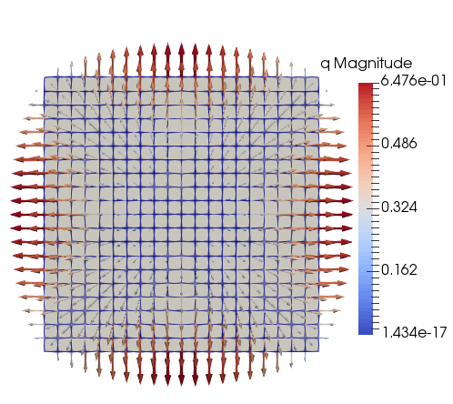

L2-projection

Introduction
This example continues from the Heat equation example, where the temperature field was determined on a square domain. In this example, we first compute the heat flux in each integration point (based on the solved temperature field) and then we do an L2-projection of the fluxes to the nodes of the mesh. By doing this, we can more easily visualize integration points quantities.
The L2-projection is defined as follows: Find projection $q(\boldsymbol{x}) \in L_2(\Omega)$ such that
\[\int v q \ \mathrm{d}\Omega = \int v d \ \mathrm{d}\Omega \quad \forall v \in L_2(\Omega),\]
where $d$ is the quadrature data to project. Since the flux is a vector the projection function will be solved with multiple right hand sides, e.g. with $d = q_x$ and $d = q_y$ for this 2D problem.
Ferrite has functionality for doing much of this automatically, as displayed in the code below. In particular L2Projector for assembling the left hand side, and project for assembling the right hand sides and solving for the projection.
Implementation
Start by simply running the Heat equation example to solve the problem
include("heat_equation.jl");Next we define a function that computes the heat flux for each integration point in the domain. Fourier's law is adopted, where the conductivity tensor is assumed to be isotropic with unit conductivity $\lambda = 1 ⇒ q = - \nabla u$, where $u$ is the temperature.
function compute_heat_fluxes(cellvalues::CellScalarValues{dim,T}, dh::DofHandler, a) where {dim,T}
n = getnbasefunctions(cellvalues)
cell_dofs = zeros(Int, n)
nqp = getnquadpoints(cellvalues)
# Allocate storage for the fluxes to store
q = [Vec{2,T}[] for _ in 1:getncells(dh.grid)]
for (cell_num, cell) in enumerate(CellIterator(dh))
q_cell = q[cell_num]
celldofs!(cell_dofs, dh, cell_num)
aᵉ = a[cell_dofs]
reinit!(cellvalues, cell)
for q_point in 1:nqp
q_qp = - function_gradient(cellvalues, q_point, aᵉ)
push!(q_cell, q_qp)
end
end
return q
endNow call the function to get all the fluxes.
q_gp = compute_heat_fluxes(cellvalues, dh, u);Next, create an L2Projector using the same interpolation as was used to approximate the temperature field. On instantiation, the projector assembles the coefficient matrix M and computes the Cholesky factorization of it. By doing so, the projector can be reused without having to invert M every time.
projector = L2Projector(ip, grid);Project the integration point values to the nodal values
q_nodes = project(projector, q_gp, qr);Exporting to VTK
To visualize the heat flux, we export the projected field q_nodes to a VTK-file, which can be viewed in e.g. ParaView.
vtk_grid("heat_equation_flux", grid) do vtk
vtk_point_data(vtk, q_nodes, "q")
end;Plain Program
Below follows a version of the program without any comments. The file is also available here: l2_projection.jl
include("heat_equation.jl");
function compute_heat_fluxes(cellvalues::CellScalarValues{dim,T}, dh::DofHandler, a) where {dim,T}
n = getnbasefunctions(cellvalues)
cell_dofs = zeros(Int, n)
nqp = getnquadpoints(cellvalues)
# Allocate storage for the fluxes to store
q = [Vec{2,T}[] for _ in 1:getncells(dh.grid)]
for (cell_num, cell) in enumerate(CellIterator(dh))
q_cell = q[cell_num]
celldofs!(cell_dofs, dh, cell_num)
aᵉ = a[cell_dofs]
reinit!(cellvalues, cell)
for q_point in 1:nqp
q_qp = - function_gradient(cellvalues, q_point, aᵉ)
push!(q_cell, q_qp)
end
end
return q
end
q_gp = compute_heat_fluxes(cellvalues, dh, u);
projector = L2Projector(ip, grid);
q_nodes = project(projector, q_gp, qr);
vtk_grid("heat_equation_flux", grid) do vtk
vtk_point_data(vtk, q_nodes, "q")
end;
# This file was generated using Literate.jl, https://github.com/fredrikekre/Literate.jlThis page was generated using Literate.jl.